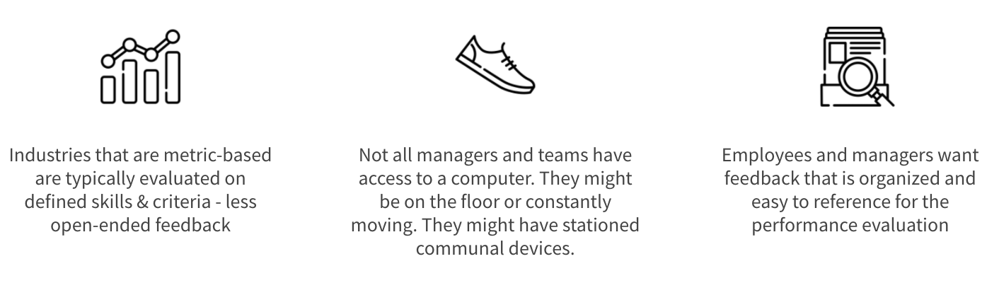
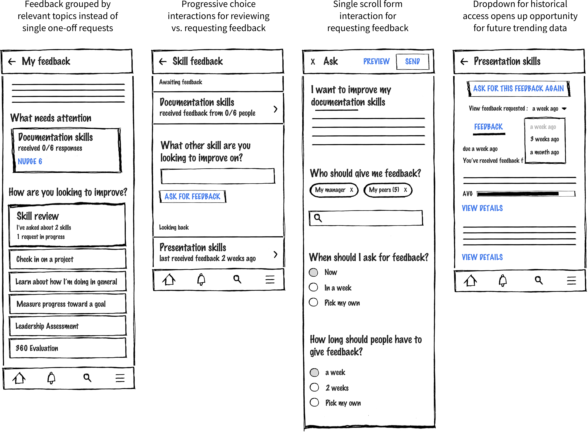
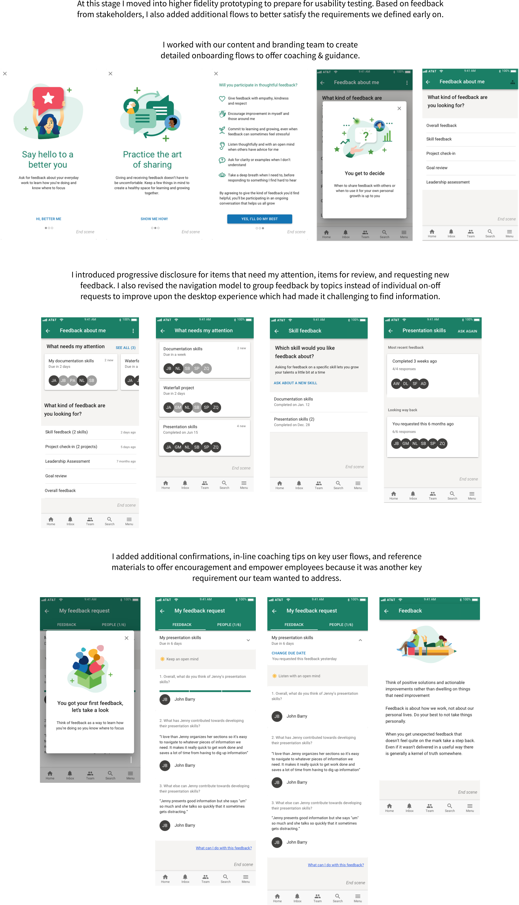
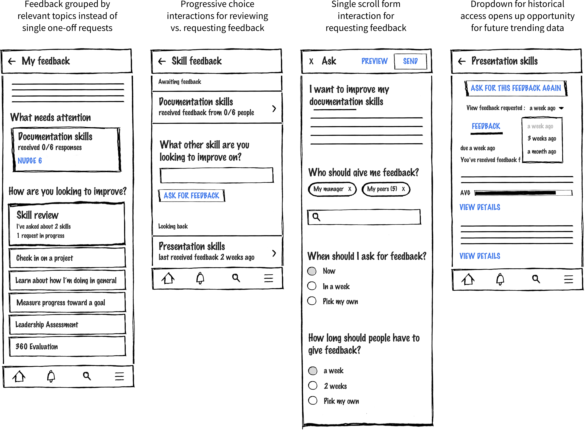
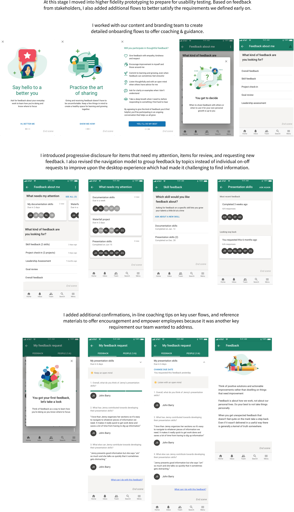
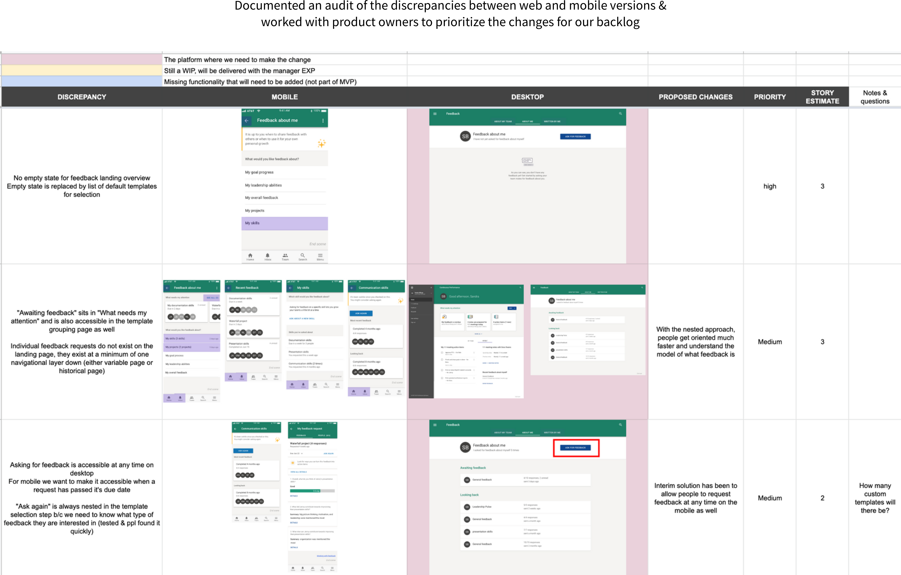
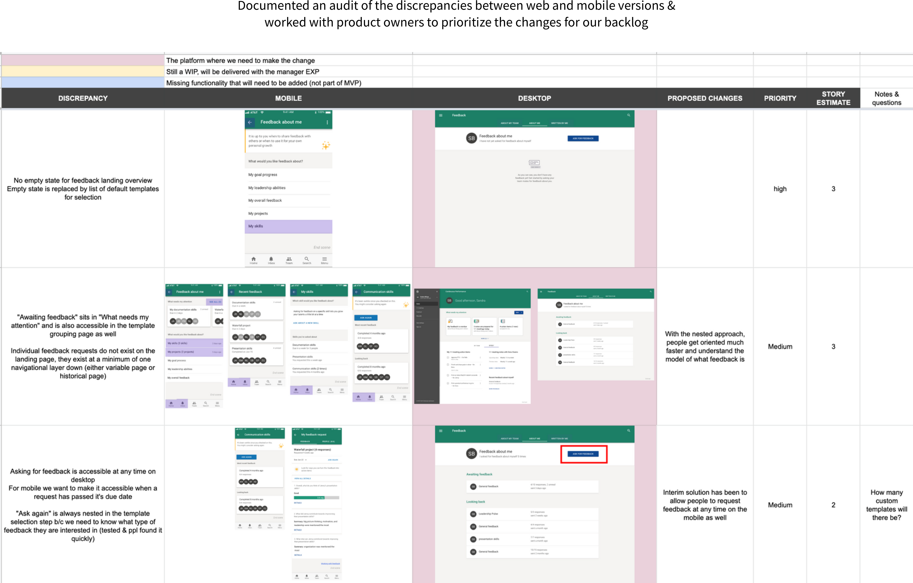

I synthesized a competitor review and identified common patterns using progressive disclosure for mobile feedback experiences which were later incorporated into my designs

I redesigned an existing web experience for a performance feedback tool into a brand new mobile app for iOS and Android in order to better fit customers in healthcare, manufacturing, sales, and other workforces that don't have regular access to a desktop computer.
The annual performance review is not enough to retain employees and keep them engaged. Continuous feedback is an HR process that can improve employee engagement at an organization while supplementing the annual review process as well. I previously worked in a team to create a desktop experience for continuous feedback, but many organizations have a mobilized workforce without consistent access to a computer that would miss out on a desktop-only solution.
Watch a short demo video of the web experience that I redesigned for mobile
I pulled in previous data & research and worked with product folks and other stakeholders to identify needs


 



 
